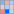
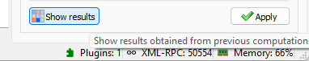

Détection de taches sur une image#
Cet exemple montre comment détecter des taches sur une image avec DataLab, et couvre également d’autres fonctionnalités telles que le système de plugins :
Ajouter un nouveau plugin à DataLab
Débruitage d’une image
Détecter des taches sur une image
Enregistrer l’espace de travail dans un fichier
Tout d’abord, nous ouvrons DataLab, et ouvrons la boîte de dialogue des paramètres (en utilisant « Fichier > Paramètres… », ou l’icône dans la barre d’outils).
Dans l’onglet « Général », nous pouvons voir le champ « Chemin des plugins ». C’est le chemin où DataLab recherchera les plugins. Nous pouvons ajouter un nouveau plugin en copiant/collant le fichier du plugin dans ce répertoire.#
Voir aussi
Le système de plugins est décrit dans la section Plugins.
Ajoutons le plugin cdl_example_imageproc.py à DataLab (c’est un plugin d’exemple qui est livré avec le package source de DataLab, ou peut être téléchargé ici sur GitHub).
Si nous fermons et rouvrons DataLab, nous pouvons voir que le plugin est maintenant disponible dans le menu « Plugins » : il y a une nouvelle entrée « Extract blobs (example) ».
La boîte de dialogue « À propos de DataLab » affiche la liste des plugins disponibles.#

Cliquons sur « Extract blobs (example) > Generate test image »#
Pour information, l’image est générée par le plugin en utilisant le code suivant:
def generate_test_image(self) -> None:
"""Generate test image"""
# Create a NumPy array:
arr = np.random.normal(10000, 1000, (2048, 2048))
for _ in range(10):
row = np.random.randint(0, arr.shape[0])
col = np.random.randint(0, arr.shape[1])
rr, cc = skimage.draw.disk((row, col), 40, shape=arr.shape)
arr[rr, cc] -= np.random.randint(5000, 6000)
icenter = arr.shape[0] // 2
rr, cc = skimage.draw.disk((icenter, icenter), 200, shape=arr.shape)
arr[rr, cc] -= np.random.randint(5000, 8000)
data = np.clip(arr, 0, 65535).astype(np.uint16)
# Create a new image object and add it to the image panel
image = cdl.obj.create_image("Test image", data, units=("mm", "mm", "lsb"))
self.proxy.add_object(image)
Le plugin a généré une image de test, et l’a ajoutée au panneau « Images ». L’image montre quelques taches, avec un disque sombre central, et un fond bruité.#
Ce plugin a d’autres fonctionnalités, telles que le débruitage de l’image, et la détection de taches sur l’image, mais nous ne les couvrirons pas ici : nous utiliserons les mêmes fonctionnalités natives de DataLab que le plugin, manuellement.
L’image est un peu bruitée, et aussi assez grande. Réduisons la taille de l’image tout en la débruitant un peu en la binarisant par un facteur de 2.
Cliquons sur « Opérations > Pixel binning ».#

La boîte de dialogue « Binning » s’ouvre. Réglez le facteur de binning à 2, et cliquez sur « OK ».#

L’image binnée est ajoutée au panneau « Images ». Il est maintenant plus facile de voir les taches (même si elles étaient déjà assez visibles sur l’image d’origine : c’est juste un exemple), et l’image sera plus rapide à traiter.#
Appliquons un filtre médian mobile à l’image, pour la débruiter un peu plus.

Cliquons sur l’entrée « Processing > Moving median », et réglez la taille de la fenêtre sur 5.#
L’image filtrée est ajoutée au panneau « Images ». Le débruitage est assez efficace.#
A présent, détectons les taches sur l’image.

Cliquons sur « Analysis > Blob detection > Blob detection (OpenCV) ».#

La boîte de dialogue « Blob detection (OpenCV) » s’ouvre. Réglez les paramètres comme indiqué sur la capture d’écran, et cliquez sur « OK ».#

La boîte de dialogue « Résultats » s’ouvre, montrant les taches détectées : une ligne par tache, avec les coordonnées et le rayon de la tache.#
Note
Si vous souhaitez afficher à nouveau les résultats d’analyse, vous pouvez sélectionner l’entrée « Afficher les résultats »  dans le menu Analyse », ou le bouton « Afficher les résultats » , en dessous de la liste des images :

Les taches détectées sont également ajoutées aux métadonnées de l’image, et peuvent être vues dans le panneau de visualisation à gauche.#
Enfin, nous pouvons enregistrer l’espace de travail dans un fichier. L’espace de travail contient toutes les images qui ont été chargées dans DataLab, ainsi que les résultats de traitement. Il contient également les paramètres de visualisation (palettes de couleurs, contraste, etc.), les métadonnées et les annotations. Pour enregistrer l’espace de travail, cliquez sur « Fichier > Enregistrer dans un fichier HDF5… », ou sur le bouton  dans la barre d’outils.
dans la barre d’outils.
Si vous souhaitez charger à nouveau l’espace de travail, vous pouvez utiliser « Fichier > Ouvrir un fichier HDF5… » (ou le bouton  dans la barre d’outils) pour charger l’ensemble de l’espace de travail, ou « Fichier > Parcourir un fichier HDF5… » (ou le bouton dans la barre d’outils) pour charger uniquement une sélection d’ensembles de données de l’espace de travail.
dans la barre d’outils) pour charger l’ensemble de l’espace de travail, ou « Fichier > Parcourir un fichier HDF5… » (ou le bouton dans la barre d’outils) pour charger uniquement une sélection d’ensembles de données de l’espace de travail.